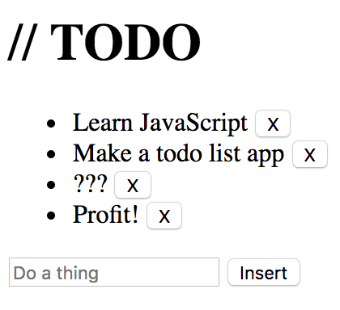

Challenge: Todo List

Make a todo list app using JavaScript. Users should be able to:
- Add new todo items using an input field and a button
- Remove completed items by clicking a button
- Pressing "enter" while in the input field also adds a new todo item
- Make sure you can't insert an empty todo item!
Use the following markup to get started:
<input type="text" id="newTodo" placeholder="Amazing thing..." />
<button id="addTodo">Add Todo</button>
<ul id="list"></ul>
Take it Further
Here are some ideas to make the app even better:
- Try adding some CSS to make it look better! Don't be afraid to add or change elements in order to achieve the look you have in mind.
- The app doesn't persist its data across page loads. Try using localStorage to save the todos.
- Make the app support multiple todo lists. How would you represent the data for this app?
- Make the items within the list sortable. Start with buttons to move up/down. Maybe even make them draggable?
Solution (see the source code to implement in steps)